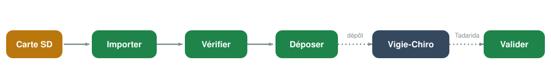

Une nuit d'enregistrement, du terrain au dépôt
Des enregistreurs autonomes posés sur le terrain captent les ultrasons d'une nuit entière. Restent ensuite des milliers de fichiers à trier, vérifier, nommer et déposer.
VigieChiro Companion prend en charge cette chaîne : importer la carte SD, vérifier la qualité des enregistrements, préparer et suivre le dépôt sur la plateforme nationale, puis relire les espèces identifiées par Tadarida. Sans tableur, sans script, sans outil tiers.

L'application
Aller plus loin
Guide d'utilisation
Installer, prendre en main, comprendre chaque écran.
Dossier de conception
Le besoin, le modèle de données, les parcours et les maquettes.
Documentation développeur
Architecture, conventions, et comment contribuer au code.
Code source
Le dépôt, les tickets et les versions publiées.